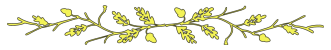

Simetra was high in the sky, searching for her friend. As soon as he had been smashed to the ground close to the clearing, she had carefully approached the fairy, who was this time hovering above the spring, for she knew that something magic was approaching her. What she didn’t know was the fact that the magic creature was using her own magic, to a little extent. As she saw the bird and realized that she could speak, the fairy sat down again to listen.
Help, help! You must help! Don’t fly away, stay and help! He’ll die!
The bird was nervously fluttering up and down; the fairy could see her own magic in the eyes of her, and she knew the bird said the truth.
Pity was filling her mind, and she rose again to follow the small creature; a sphere of magic was glowing around her, and as soon as she got close enough to Simetra, she was also enclosed by this green sphere of light. A peculiar, but somehow good warmth was flooding her.

If Simetra ever had had any doubts as the sphere of magic drew near, she knew she had done the right thing, for the fairy followed her after she had nervously approached her. Only seconds later, the two creatures flooded by magic reached the place of the accident; The fairy shot down again, and as soon as her feet touched the ground, it became green; as green as the grass of the clearing. Astonished about this strange reality and her own action that followed, Simetra sat down on her shoulder, feeling as if she belonged there. Of course, she was now containing part of her magic, but she could not understand how she could have trusted her so fast without even realizing who or what she was — as if done by magic.
The same energy that had made her speak seemed to be flowing through her friend now, and within a second, he was hovering in the air, his wounds closing and his skin emanating a strange, bright, green light. He was now in a magic sphere of his own.
Then, shortly before he seemed to be normal again, this light around him changed; His sphere exploded in a dark blue with a bit of red, looking like an ultraviolet ball of energy. However, the fairy had already turned around, as if her job was finished, moving away as if fleeing from him. Simetra, however, was still watching her friend.
The powerful, energetic sphere around him was growing now, contracting once more, and then… It exploded in a shimmering burst of light!
Simetra was blinded, but the fairy didn’t react in any way. The dark blue sphere began to manifest itself again, but it was much bigger now, somehow — touching the sphere of the fairy, mixing with it in a magic way the powerful bird could not understand. Such things were not to be understood by a purely logic brain, and Simetra was still learning how to use her newly gained emotions that added to her former instincts. She had become human, in a way, but her human parts still felt like those of an infant.
The green and the ultraviolet sphere were still in touch and Simetra was in the very middle of it until the fairy moved away; still, the fairy seemed not to have noticed anything. It was a sorry sight if one knew what was going on, but none of the beings present did. As soon as the fairy had flown far enough to separate the two spheres, the dark blue one shrank once more until it was nothing more than the size of a tiny nut, hovering in front of him. Then, with a big ‘bang’, it exploded again; but this time, the majestic power didn’t stop after it had reached the fairy. The shock wave pushed against the green sphere, and the suddenly astonished fairy shrieked highly as she was thrown above the trees, followed by Simetra who couldn’t react that quickly, either.
Even if he had been awake, even if his closed eyes had been open, he would not have been able to understand what he had done. His instincts had controlled him and only his emotions could realize what was going on. If he had been in control of his senses in that moment, an eternal sorrow would have grabbed his soul and the feeling of loss and bidirectional denial without having ever tried to establish a connection with all the power one of them could have used. Ignorance, this was the word to express his feelings.
But he wasn’t awake, and the fairy wouldn’t remember anything except a sudden emotion of friendship with him. Then, another kind of magic yet unknown to him made him hover towards the clearing, and he dropped on the stones in the middle of it, where he should awake shortly after. Simetra, at the same time, was with the fairy in the partially demolished light green sphere, caught in their own magic. The brightness of the sphere was becoming less apparent, and then, a minute after they had been shot right into the sky, it had gone.
Still, the two of them were accelerating. The fairy realized they had to stop, and do so quickly. Thus, she spread her wings and grabbed the helpless bird, trying to stop this unwanted ascension. They had already been so high that their two pairs of wings started to freeze, and moments later, they began to fall like stones. The fairy aimed at the ground and started to move her hands in a way that was so strange that Simetra’s eyes could not follow these movements. Then, a green ball of light, created right in the hands of the fairy, was flying even faster than the two of them, crashing through the treetops and hitting the ground. At first, nothing seemed to happen, but then, the trees shrank away and a smooth patch of green was waiting for them.
He was now sitting on the sign, brushing it with the feather, but still, nothing would happen. At least, not the thing he’d hoped for, as he wasn’t moved by any kind of magic he could see. The black figure had now stopped, taking in the strange picture of a man sitting on a sign, stroking it with a feather. Even the ‘road builders’ had stopped in their movements. His thoughts were racing until he realized once more that he should not search for an answer. Then, the answer came. And the black figure was coming, too.
Apollo was slowly breathing in and out. He needed to calm down, decouple himself from the oppressive situation, and let things happen instinctively. Step by step, he felt as if he was objectively watching from outside, an external observer.
The black figure was not hovering in the air anymore, but was standing on the ground, slowly approaching him. When it saw his fingers trying to grab some bits of grass, it could not help but laugh again. This creature was so helpless, it could never have been the cause of that magic wave that had been rushing over this land hours before! The black figure grinned.
In fact, it grinned until the grass had touched the sign. Then, it stopped and watched the spot where that man had been sitting just a second before. He was gone. And so was the sign, followed by the muddy spot, the grass and the water. A majestic roar was to be heard, and the ‘road builders’ levelled the remnants of the clearing in a second. He had escaped on a plant of running words.